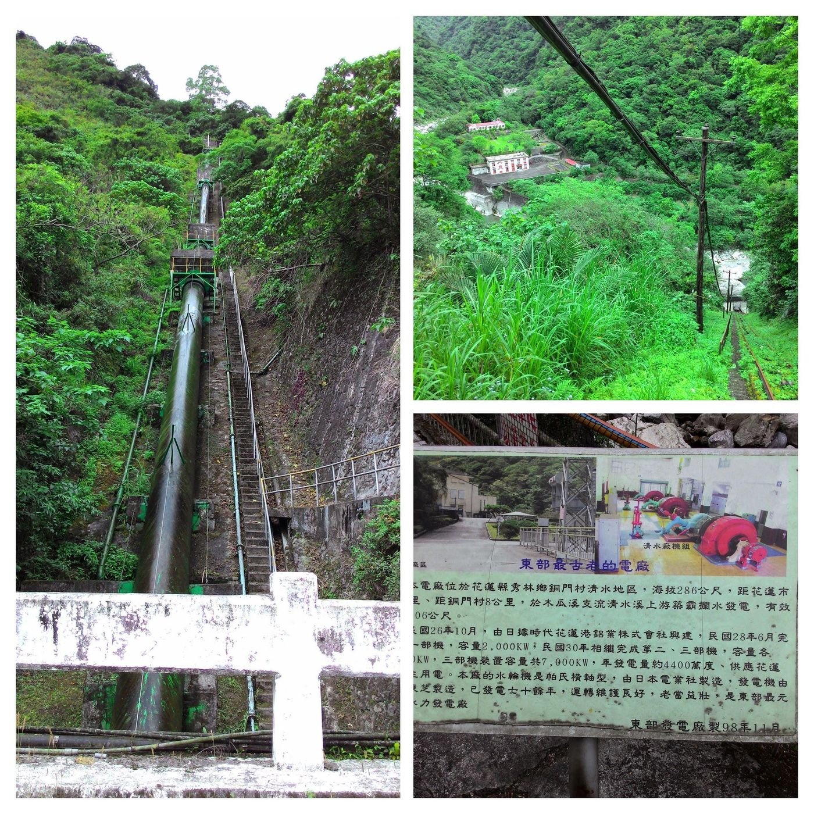
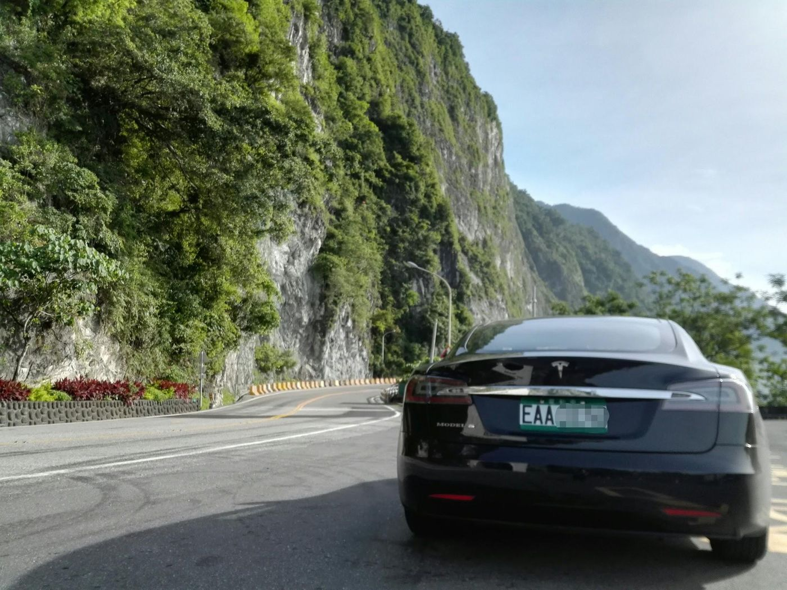

Hydropower and land flexibility
A mountainous island underuses hydro.
English text is not ready yet; showing Traditional Chinese.
日月潭水力是日本時代全球級的 BOT：向世界募資，1934 年完工，加速台灣現代化——有電才有產業。後來明潭抽蓄也是重要節點。
民主化後，環保意識與政治連結使開發門檻升高。水力需要土地；東部花蓮、台東仍有高落差，技術上並非做不到，難在取得與共識。
銅門等早期電廠提醒我們：百年前就有人看見水力。2014 我在銅門作調查，2017 在崇德遠望清水斷崖——風景背後是仍被低估的能源地理。
要減碳，選項無非是：再生、水力、核能，或繼續排碳。再生需要時間；水力與核電是已知可基載的路徑，卻最容易變成政治提款機。
更靈活的土地使用與開發模式，不是犧牲環境，而是承認：永遠不開發，也是一種對氣候與空污的選擇。


Source: Taiwan's Great Future — Switzerland Today, Taiwan Tomorrow — Eugene Chang · 2. Energy & environment